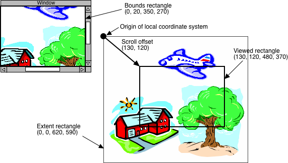

Using the View and ScrollableView classes
Creating a user interface component for your application's data structure
is achieved by subclassing and customising the View
class, or its subclass ScrollableView. This section describes how these classes works and what needs to
be done to accomplish various things with them.
Coordinates, scrolling and the extent
Each instance of View or ScrollableView has its own local coordinate system in which
drawing takes place and the locations of mouse events are reported. For a plain View, the
origin of the local coordinate system is always at the top left corner
of the view. For a ScrollableView, the origin changes when the view is scrolled.
In addition to its bounds rectangle, a ScrollableView also as an extent rectangle
defining the limits of scrolling. The local coordinate system is
relative to this rectangle, so that its top left corner is always at
(0, 0) in local coordinates. The size of the extent rectangle is called
the extent.
The scroll
offset is the difference in local coordinates between the top left corner
of the view and the top left corner of the extent rectangle. Figure 1 illustrates
the relationship between the view's bounds, the extent rectangle, and the scroll offset.
The part of the local coordinate system that is visible in the view is
called the viewed rectangle. The scroll offset is constrained, as
far as possible, so that the viewed rectangle lies within the extent rectangle. So,
in order for scrolling to be possible in a given direction, the extent must
be larger than the view's bounds in that direction.
If
the extent is smaller than the bounds in a given direction, there is
no room for movement and the scroll offset in that direction will be
clamped
to zero. In that situation, the viewed rectangle will include areas
that
are outside the extent rectangle. These areas are filled with the background color of the ScrollableView before your drawing method is called.
The
background color can be set to None to suppress automatic filling of
the background areas. However, whether you are able to draw anything
outside the extent rectangle yourself is platform-dependent, so for maximum portability you should either specify a background color or leave it set to the default.

Figure
1
Bounds, extent, viewed rect and scroll offset
Drawing and invalidating
Whenever some part of the view needs to be drawn, the draw
method is called with a Canvas
object as parameter. The canvas object encapsulates a drawing state and
provides drawing methods. The draw method is also passed an update rectangle that bounds the region needing to be drawn.
The initial clipping region of the canvas is set to the update rectangle. In the simplest case, the draw method
can just erase and redraw everything, and the clipping will ensure that
only the parts that actually need drawing are affected. A more intelligent
draw method can make tests against the update rectangle and be more
selective about what to draw.
There are two ways that calls to draw can be triggered. One
is when part of a window becomes uncovered on the screen. The other is by
calling the view's invalidate method, which marks the whole viewed
rectangle as needing to be drawn, or invalidate_rect, which marks
a specified rectangle.
Note that the canvas passed to the draw method is only valid
for the duration of the call, and should not be retained beyond it. To
draw into the view at other times, it is necessary to call the with_canvas method, passing it a function that accepts a canvas as parameter. However,
this should be avoided if possible. It is almost always easier and more
efficient to simply invalidate the affected region and wait for the draw method to be called.
Mouse tracking
Mouse-down events are delivered to a view by calling its mouse_down
method. In response, many applications will want to enter a mode in
which the mouse is tracked and some action performed until a mouse-up
event occurs. The track_mouse method provides a convenient way to do this. The idiom for using it goes like this:
def mouse_down(self, event):
# Do something in response to the mouse click,
and then...
for event in self.track_mouse():
# Do something in response
to dragging
# Do something in response to release of the
mouse
The track_mouse method returns an iterator which yields a
series of mouse events. All of these events will be mouse-drag events,
except for the final one, which will be a mouse-up event. Thus, when the
above loop is finished, event will be bound to a mouse-up event
representing the location where the mouse was released.
Note that the body of the loop will be executed for the final mouse-up
event as well as for the mouse-drag events. Usually it doesn't do any harm
to treat them both the same way, but if it matters, you'll need to test
the kind of the event in the loop.
Also note that track_mouse only reports mouse-drag and
mouse-up events -- any other kind of events, such as key events,
occurring during the drag will be ignored. If you need to handle such events while dragging, you will
have to implement mouse tracking non-modally using mouse_drag and mouse_up methods on your view.
Model observation
Since one of the primary uses of a view is to display a model, some
convenience features are provided to support using it in the role of a
model observer. For the frequent case where the view observes a single
model object, there is a model property. Assigning to this property
has the side effect of connecting the view to the model.
If the view needs to respond to changes in more than one model object,
you can use the add_model and remove_model methods to
attach and detach models, and the models property to retrieve a
list of currently attached models.
An alternative way of connecting and disconnecting views and models is to
use the add_view and remove_view methods of the model. It
doesn't matter whether you connect the view to the model or the model to
the view; the end result is the same.
A default model_changed method is provided which simply invalidates
the whole view, causing it to be completely redrawn. If redrawing your
view is fairly quick, you won't need to do anything else to respond to model
changes -- just call the model's notify_views method and the view
will update itself.
If you need to be more selective about what you redraw, you'll have
to pass some information about what part of the model has changed. There
are a couple of levels at which you can customise the process. At one
level, you can pass some parameters along with the model_changed
message:
In the
model
...
self.notify_views(changed_item = 42)
...
|
|
In the
view
def model_changed(self, model, changed_item):
...
|
At another level, you can send a custom change message and define
a method in the view to handle it:
In the
model
...
self.notify_views('wibble_twisted',
which = w)
...
|
|
In the view
def wibble_twisted(self,
model, which):
...
|